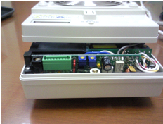
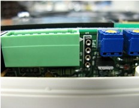
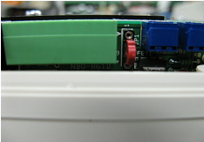
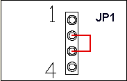
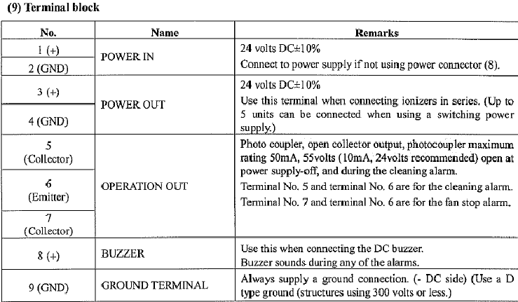
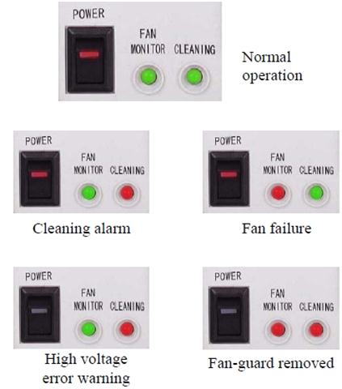

Service History
Subject: Procedure for activate Cleanning alarm & Fan stop alarm in KD750B ionizer fan
Handler Model: NS-8040
Controller:
Date:
Action

1-1. To Open the cover
1-2. To remove the short PINs.(x2)
NOTE: Existing short PINs should be inserted
|

|
Jumper pin(1,2) - remove Jumper pin(3,4) - remove |
|
 1-3 . To insert the short PIN to 2-3. |
 |
2)To change wiring on Terminal block of KD750B
2-1. Existing wiring should be using the 5&6(cleaning alarm), so this wiring connection change to 5 &8(Buzzer).
2-2. Short the connector point No 6 &7 (for fan stop alarm).

